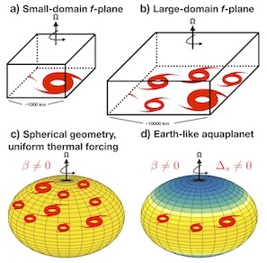

|
The hydrological cycle and large-scale atmospheric circulations play a fundamental role in determining climate changes. Understanding how the water vapor, angular momentum, and energy balances of Earth's atmosphere respond to radiative forcing is central to interpreting future climate projections and paleoclimate reconstructions. The figure to the right illustrates how individual percentiles of precipitation change in response to greenhouse warming at different latitudes, with red indicating decreases and blue indicating increases. Both "thermodynamic" changes, from atmospheric water vapor, and "dynamic" changes, from the winds, affect the total precipitation changes that are shown in the top panel. Using a novel simulation strategy, we show that the isolated effect of thermodynamic changes largely accounts for the total precipitation changes across the distribution (bottom panel). This figure is adapted from Labonté & Merlis 2022 (available here). |
|  |
Tropical cyclones (or hurricanes) are one of the most destructive forms of extreme weather. The science of their responses to climate change has important implications for risk assessment. My research uses high-resolution global atmospheric models, capable of explicitly simulating tropical cyclones, to develop an understanding of the larger-scale climatic controls on them. We have used idealized boundary condition simulations, such as aquaplanets, to clearly isolate factors such as the latitude of maximum tropical precipitation in determining tropical cyclone number and the thermodynamic controls on changes in tropical cyclone rainfall. This figure is adapted from a review article by Merlis & Held 2019 (available here). |
|
The response of the global-mean surface temperature to changes in greenhouse gas concentrations—the climate sensitivity—is a key aspect of uncertainty in projections of future climate. Beyond the global mean, the pattern of temperature change has important regional features, such as enhanced warming in the Arctic. The figure to shows that the polar atmosphere has different atmospheric temperature responses for different climate perturbations: there is more surface temperature change, particularly near the surface, for warming from increased carbon dioxide concentration (red) compared to changes in solar radiation (yellow) or atmospheric energy transport changes (green). This dependence on how the high-latitude climate is forced gives rise to residual polar warming in typical solar radiation management geoengineering scenarios. This figure is adapted from Henry & Merlis 2020 (available here). |